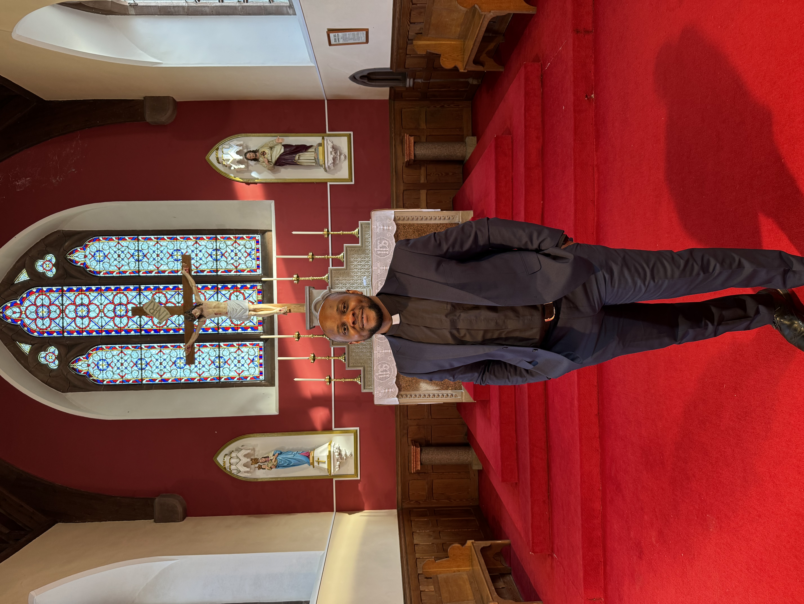

A priest forever
With grateful hearts, we give thanks to God.
Very Rev. Fr. Maximilian Nwosu was ordained to the priesthood for the Diocese of Aba, Nigeria, in 2011. Following his ordination, he served as Assistant Priest at Our Lady of Lourdes Catholic Church, Aba, where he ministered to the spiritual needs of the faithful while also serving as Dean of Studies at Our Lady of Lourdes Model Secondary School.
In September 2012, Fr. Maximilian was appointed School Manager of St. Anthony’s Secondary School, Nbawsi. In this role, he combined pastoral ministry with educational leadership, helping to nurture both the academic and moral development of young people while continuing his commitment to the mission of the Church.
In August 2015, Fr. Maximilian came to Scotland as a missionary priest in the Diocese of Aberdeen. Since October 2015, he has faithfully served the parishes of Beauly, Cannich, Eskadale, Ullapool, and Fort Augustus, as well as the church communities of Poolewe and Lochinver. He currently serves as the Dean of St. Joseph’s (Highland) Deanery, continuing to dedicate his priestly ministry to proclaiming the Gospel and celebrating the sacraments. He accompanies the people of God with faith, compassion and joy.
Fifteen years of priestly ministry is a testimony of God’s grace, fidelity, sacrifice and loving service to His people. This anniversary page is created so that well-wishers can confirm attendance and leave prayers, memories, felicitations and congratulatory messages.
You may write a short message of thanksgiving, a personal memory, a blessing or a prayer for continued fruitfulness in the vineyard of the Lord.

“You are a priest forever, according to the order of Melchizedek.”Psalm 110:4
Gregorian chants and Sacred Songs
Sacred music & songs
Use the button below to play or pause the Gregorian chants and songs. Browsers usually require visitors to press play before music can begin.
RSVP Attendance
Please complete the RSVP form using the button below.
Complete RSVP FormLeave a Felicitation
Write Your Congratulatory Message
Please click the button below to leave your congratulatory message. Your message will be safely recorded.
Leave a Felicitation MessageLocation
Parish / Church map
St. Mary's RC Church, Beauly, IV4 7AU, Scotland, United Kingdom.
Location
Reception Hall map
Phipps Hall, Station Road, Beauly, IV4 7EH, Scotland, United Kingdom.
15 years of priesthood, 15 years of God's unfailing grace and countless reasons to be grateful!
A Heartfelt Message of Gratitude
As I reflect on this amazing milestone in my priestly journey, my heart overflows with gratitude, joy and a profound sense of God's goodness. These fifteen years have been a remarkable journey of faith, love, service and blessings beyond measure. Through moments of joy and challenges, successes and uncertainties, one thing has remained constant and that is God's faithfulness and the love of the wonderful people He has placed along my path.
I give thanks to Almighty God, who called me despite my unworthiness, entrusted me with the sacred gift of the priesthood and has continued to sustain me with His grace. Whatever these fifteen years have been and whatever the years ahead may bring, I owe everything to His boundless mercy and love.
My deepest and heartfelt gratitude goes to Bishop Hugh Gilbert OSB and Bishop Augustine Echema, my brother priests, deacons and religious, my beloved family, parishioners, friends and the many wonderful people whose lives have become beautifully intertwined with mine. Your prayers, friendship, encouragement and unwavering support have been a constant source of strength and inspiration throughout my ministry.
To everyone who joined me in celebrating this special anniversary, travelled from near and far, attended the Thanksgiving Mass and reception, sent thoughtful messages and cards, offered prayers, made telephone calls, presented gifts or contributed in countless ways to making the occasion truly memorable, thank you from the depths of my heart.
I was genuinely touched by the extraordinary outpouring of love, generosity and goodwill. Your presence, kind words and thoughtful gestures made the celebration not merely an anniversary of my ordination but a beautiful celebration of the faith, friendship and love we share.
You have reminded me once again, that the priesthood is never a journey walked alone. It is a journey enriched by the people we encounter, the lives we touch, the friendships we build and above all, the grace of God that binds us together.
As St Paul beautifully expresses:
"I thank my God every time I remember you." (Philippians 1:3).
And in the spirit of his generous self-giving:
“I will gladly give all I have for your souls.” 2 Corinthians 12:15
These words capture both my gratitude for the past fifteen years and my renewed commitment to the priestly vocation to which God has called me.
As I look towards the years ahead, I do so with enlivened hope, a grateful heart and a sincere desire to continue serving God and His people with love, humility and dedication.
May the Almighty God, who has blessed me so abundantly through each of you, bless you and your families in return. May He reward your kindness, grant you peace and fill your lives with His unfailing love and grace.
Thank you for being part of my story, for sharing in my joy and for making these fifteen years of priesthood a journey worth celebrating.
With a heart full of gratitude, affection and priestly blessings,
Rev. Fr. Maximilian Nwosu
15th Anniversary of Priestly Ordination | 2011–2026
15 Years of Grace and Blessings
Memories of Our Celebration
Relive the beautiful moments of my 15th Priestly Ordination Anniversary celebration at St. Mary's RC Church, Beauly, on 17th October 2026. Thank you to everyone who joined me in thanksgiving, prayer, friendship and celebration.
Words of love and encouragement
Messages of Congratulations & Goodwill
Heartfelt wishes and prayers on 15 years of priestly ministry.
Messages advance automatically. Hover over a message to pause.